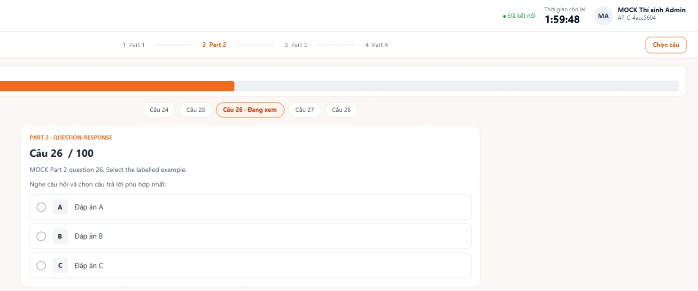
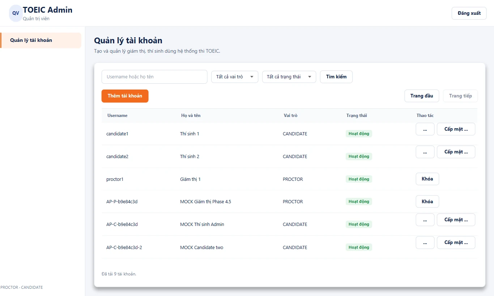
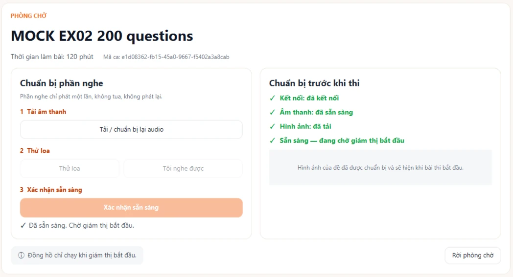
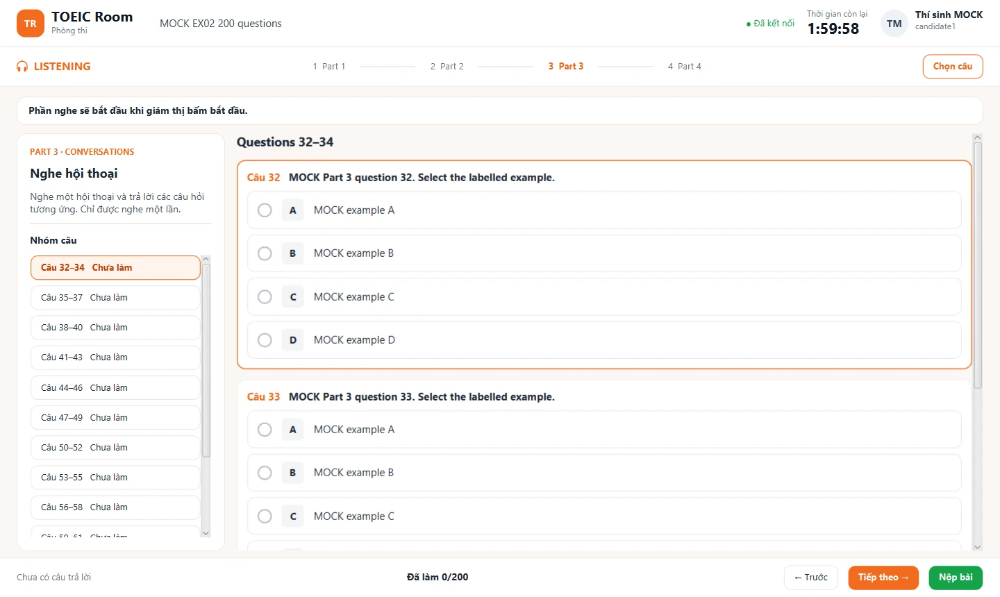
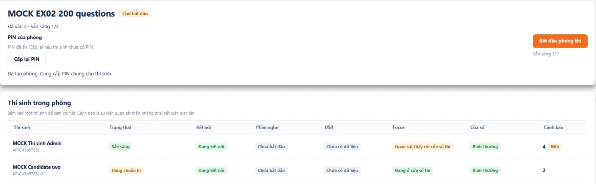
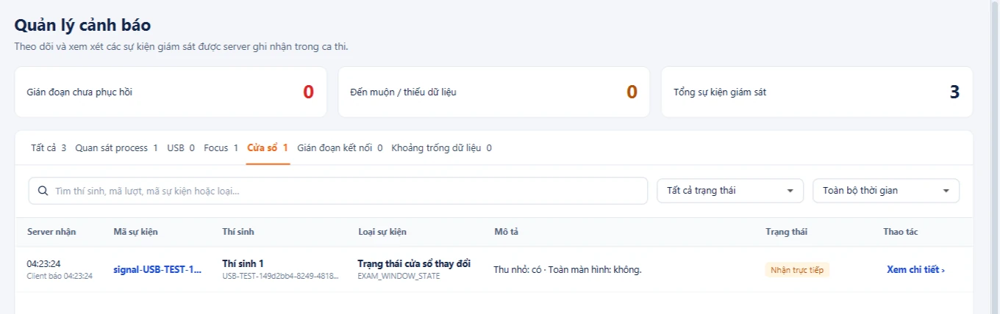

TOEIC
Monitor
Thi TOEIC Client–Server và giám sát máy thí sinh theo thời gian thực — quan sát, không phán xét.
Sáu phần, từ bài toán đến demo
Một phòng thi máy tính cần ba điều cùng lúc
Bài làm không mất
Mạng chập chờn, app bị đóng, hai cửa sổ cùng ghi một lượt thi — đáp án đã báo “đã lưu” phải thật sự nằm trong DB.
Giờ do Server quyết
Deadline chung cho cả phòng, không tin đồng hồ máy thí sinh. Phần Listening chỉ phát một lần, không tua, không phát bù.
Giám thị nhìn thấy
Process, USB, focus, cửa sổ trên máy thí sinh hiện gần thời gian thực — là sự kiện “quan sát thấy”, không phải kết luận gian lận.
Một đề TOEIC 200 câu, ba vai trò trong một app
Tài khoản & đề thi
Tạo Giám thị/Thí sinh, khóa/mở khóa; import đề JSON kèm media, sửa từng câu.
Mở phòng, bấm START
Tạo phòng → PIN 5 số chung → xem ai “Sẵn sàng” → bắt đầu, theo dõi cảnh báo.
PIN → nghe → đọc → nộp
Phòng chờ tải âm thanh, thử loa; Listening một lần, Reading, đáp án tự lưu.
Kiến trúc & giao thức
Một Server, một app desktop cho ba vai trò, hai kênh mạng với hai nhiệm vụ khác nhau.
REST cho dữ liệu, WebSocket cho thời gian thực
Desktop app
Đăng nhập, đề, audio & ảnh có xác thực, lưu đáp án, nộp bài, đọc trạng thái, timeline.
Heartbeat, snapshot & event giám sát, lệnh phát Listening, cảnh báo tới giám thị.
Một ứng dụng, chia module
Mỗi message một envelope, ACK chỉ sau COMMIT
| Trường | Ý nghĩa |
|---|---|
| protocolVersion | Phiên bản (v0) |
| type | Loại message |
| messageId | Giữ nguyên qua retry |
| requestId | Nối ACK với request |
| attemptId | Lượt thi — kiểm scope |
| traceId | Nối request, ACK, log |
| payload | Dữ liệu theo type |
Một phòng thi, từ PIN đến nộp bài
Start trùng ID không phát lại. Reconnect không reset deadline.
Lỗi là một phần của giao thức
Client quyết định theo error.code ổn định, không đọc câu thông báo tiếng Việt.
Sai/thiếu credential → đăng nhập lại
Sai role/scope → khóa thao tác, không retry
Revision/writer/epoch cũ → đồng bộ lại state
Cùng ID/revision, khác nội dung → dừng retry
JSON/trường sai → sửa request
Sai phase → nạp lại state Server
Quá deadline → khóa, đọc trạng thái chốt
Lỗi tạm → retry cùng ID, có backoff
Lưu – nộp – hết giờ
Save, submit, timeout và takeover tranh nhau cùng một lượt thi. Nhóm chọn một khóa duy nhất.
Một khóa, một đồng hồ, ACK sau COMMIT
Khóa bản ghi attempt — save, submit, timeout, takeover dùng chung
Kiểm writerEpoch sau khóa — cửa sổ cũ bị takeover → STALE
Đọc clock_timestamp() một lần — không dùng now() của đầu transaction
So revision: thấp hơn → STALE; bằng nhau mà nội dung khác (dạng chuẩn hóa) → CONFLICT
COMMIT rồi mới ACK — rollback không bao giờ báo “đã lưu”
Bắt đầu một lần, nghe một lần
START có khóa Session
Chụp danh sách READY, ghi deadline chung bằng giờ DB. Start trùng ID trả kết quả cũ, không phát lại audio.
Thiếu file → không READY
Audio tải trước và kiểm checksum. Gián đoạn khi nghe: dừng, khóa phần nghe, ghi cờ — không tự resume.
Vào muộn → chỉ Reading
START khi chưa đủ READY cần giám thị xác nhận; người chưa sẵn sàng làm Reading trong thời gian còn lại.

Giám sát đa tín hiệu
Trạng thái hiện tại và lịch sử sự kiện là hai luồng tách biệt — snapshot mới không xóa những gì đã ghi.
Từ ProcessHandle tới màn hình giám thị
Poll
ProcessHandle mỗi 1 000 ms, ngoài luồng JavaFX
Lọc 9 tên
Không đọc tham số, không đóng process
Định danh
(collectorSessionId, pid, startInstant)
Gửi
FULL làm mới 2 s · event có eventId ổn định qua retry
Hai luồng
State: reducer trong RAM · History: commit DB rồi ACK
Heartbeat 2 s · timeout 6 s
Mất heartbeat → UNKNOWN. Đó là mất liên lạc, không phải bằng chứng gian lận.
Một lần xuất hiện = một event
Không lặp event ở mỗi poll. Collector chỉ chạy ở role thí sinh.
Thiếu chuỗi thì xin full, không đoán
&& sequence == currentSequence + 1
Ngược lại → RESYNC: giữ tập last-known, đánh dấu UNSYNCED, chờ full snapshot mới. MonitoringStateReducer.java
Epoch mới = full #1
Reconnect mở epoch mới; message của epoch cũ bị từ chối.
Trùng → ACK lại
Cùng ID cùng nội dung: DUPLICATE. Khác nội dung: CONFLICT.
Bản phát hành: FULL
Delta là thử nghiệm, cần cờ server + capability; mặc định tắt.
Bốn tín hiệu, cùng một làn gửi đã cấp quyền
Process
9 tên ứng dụng qua ProcessHandle; lịch sử theo đợt 30 s cho UI, raw vẫn giữ.
USB lưu trữ
CIM (MSFT_Disk): có mặt lúc bắt đầu, cắm, rút.
Focus & cửa sổ
JavaFX báo mất focus, thu nhỏ, thoát toàn màn hình.
Màn hình
Số màn hình do JavaFX báo cáo khi thay đổi.
Thí sinh được thông báo · chỉ chạy trên máy thí sinh · không chặn thiết bị, không đọc nội dung hay serial USB, không chụp màn hình · polling có thể bỏ sót thao tác quá nhanh giữa hai lần quét.
Thực nghiệm
& kiểm thử
Mọi số liệu sau đây lấy nguyên từ báo cáo trong repo; raw không sửa tay, summary do script sinh.
Poll nhanh bắt được nhiều hơn, nhưng tốn CPU hơn
process con có kiểm soát: 273 thấy · 84 sót · 3 chưa kết luận
12 lượt (4 chu kỳ × 3), seed 1234 · Intel Core Ultra 5 125H, Windows 11 · ProcessHandle thật, client giả lập, không qua mạng
Full và delta đều đúng dưới 12 kịch bản lỗi
3 workload × 12 kịch bản × 2 mode · 4 ca âm cố ý sai đều bị bắt (exit 1)
Tái lập byte-identical
Chạy lại toàn bộ chiến dịch: 77 file report/summary giống từng byte (seed 20261012).
Quyết định
Replay chứng minh tính đúng, chưa đo tiết kiệm byte, LAN chưa chạy → giữ FULL mặc định.
1 → 20 thí sinh giả lập, không thao tác nào lỗi
| Thí sinh | Monitoring p95 | Phát hiện ngắt p95 |
|---|---|---|
| 1 | 51,82 ms | 6 539,59 ms |
| 5 | 59,05 ms | 6 461,55 ms |
| 20 | 171,26 ms | 6 688,34 ms |
114 JOIN · 114 Submit · 15 START · 342 lần gửi monitoring — tất cả thành công. Phát hiện ngắt ≈ 6,5 s khớp timeout heartbeat 6 s.
Bộ hồi quy đầy đủ: không lỗi nào còn mở
PASS 0 FAIL · 0 ERROR · 23 SKIP — protocol, client, server, monitoring-spike, gồm GUI JavaFX thật
PASS windows-observer (CIM/USB) trong cùng lượt Maven
PASS E2E ACCOUNT_PIN: Admin → Giám thị → 2 thí sinh → START → nộp
Lỗi tìm ra khi review cuối
Sau SUBMIT/TIMEOUT, kênh tín hiệu vẫn chạy. Dưới tải CPU: code cũ 3/6 FAIL, bản sửa 6/6 PASS.
Chưa kiểm — ghi đúng là chưa
LAN hai máy vật lý · người nghe audio thật · cắm/rút USB vật lý trên commit tích hợp: NOT TESTED.
Demo phần mềm
Một Server, ba cửa sổ: Admin, Giám thị, Thí sinh — chạy cùng một bộ cài.
Năm bước thử nhanh
Tạo một Giám thị và một Thí sinh, tự đặt mật khẩu
“+ Tạo phòng” → chọn đề → đọc PIN cho thí sinh
Nhập PIN → tải âm thanh, thử loa, xác nhận → hàng chuyển “Sẵn sàng”
Bắt đầu phòng thi → Listening phát, chân trang “✓ Đã lưu” → Nộp bài
Mở Chrome/Zalo, rời cửa sổ, cắm/rút USB → cảnh báo hiện bên Giám thị

Phòng chờ kiểm sẵn sàng, bài thi tự lưu


Một bảng cho cả phòng thi

Cảnh báo ghi “quan sát thấy”, giám thị kết luận

Lọc theo nguồn
Process · USB · Focus · Cửa sổ · Gián đoạn kết nối · Khoảng trống dữ liệu.
Hai mốc giờ
Giờ client báo và giờ server nhận đặt cạnh nhau, không trừ lẫn nhau.
Mất kết nối không phải bằng chứng gian lận — giao diện nói rõ điều này.
Khác cách làm thông thường ở đâu
| Đóng góp | Mô tả | Bằng chứng |
|---|---|---|
| Lưu/nộp đúng khi tranh chấp | Một khóa attempt cho save/submit/timeout/takeover; epoch sau khóa; giờ DB; ACK sau COMMIT | Test PostgreSQL thật; E2E ACCOUNT_PIN 3/3 |
| Giám thị thấy gần thời gian thực | Full snapshot + epoch/sequence; state và history tách riêng; UNKNOWN thay vì đoán | Replay 72 PASS + 4 ca âm bị bắt |
| Đo đánh đổi polling | Bỏ sót vs CPU trên process con có kiểm soát; raw không sửa, có checksum | E1: 12 lượt, 360 process |
| Đa tín hiệu có giới hạn | USB/focus/cửa sổ/màn hình chung một làn đã cấp quyền; không đọc nội dung | Runner USB 14/14; CIM thật PASS |
| Phòng PIN chung | START khi chưa đủ READY, người muộn chỉ làm Reading; PIN không lưu plaintext | Benchmark 1–20 client, 0 lỗi |
Những gì còn chưa làm được
- Thi đầy đủ qua Internet / LAN hai máy vật lý chưa chạy xong
- Chưa có người nghe audio thật qua loa/tai nghe
- Polling bỏ sót process sống ngắn hơn chu kỳ
- Restart Server mất trạng thái hiện tại (lịch sử vẫn giữ)
- Bộ cài MSI chưa ký số; delta chưa qua gate nên tắt
- Chạy checklist hai máy khác mạng đã soạn sẵn
- Đo byte thật của full và delta (E2) trước khi bật delta
- Đánh giá nguồn sự kiện OS thay cho polling (cần review riêng)
- Ký số bộ cài, nghiệm thu âm thanh với người thật
Cảm ơn
thầy cô
& các bạn
Mã nguồn, tài liệu và bằng chứng
github.com/AnhTaizz/Toeic-Monitoring-Realtime